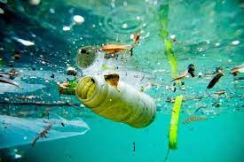
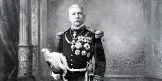
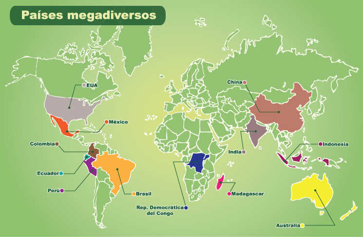
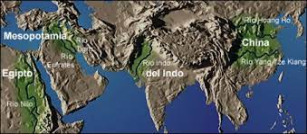

CONTAMINACIÓN DEL AIRE, SUELO Y AGUA.
CONTAMINACIÓN DEL AGUA: Sucede cuando una materia que no pertence al agua natural se junta al agua, como cuando la lluvia detecta precencia de contaminantes que pueden ser : 1.óxidos de azufre. 2.nitrógeno. 3.monóxido de carbono. Cuando el agua de lluvia escurre en el suelo, también acarrea otros contaminantes, que son residuos de materia orgánica, y estos residuos llegan a varios ecosistemas acuáticos.
CONTAMINACIÓN DEL AIRE: Sucede cuando al aire se le vierten sustancias un poco toxicas y se quedan susplendidas. Estas sustancias son particulas de polvo como el hollín es casi invisible, también genera la combustión.CONTAMINACIÓN DEL SUELO: El suelo se contamina con residuos de basura, que son retos de fruta,verduras & carne, también plasticos y otros objetos. Aunque también se contamina con lluvia acida, desechos de fabricas o también por ciertas cosas.
Imagen de referencia:
Universo: Conocido como el Cosmos, esta conformado por galaxias, planetas, radiación, materia oscura y estrellas. Este tiene cuatro dimensiones que vienen siendo largo, alto, ancho y la cuarta que es la del tiempo.
Sistema Solar: Se encuentra en la Vía Láctea. Y es un conjunto de cuerpos celestes como planetas, cometas, satélites, entre otros), y estos orbitan de forma elíptica alrededor del Sol, esto debido al efecto de la fuerza de la gravedad.
Planetas: En el Sistema Solar, estos cuerpos celester oribtan de forma elíptica alrededor de un astro como el Sol a distintas distancias, y sus fuerzas de gravedad.
Sol: Es una estrella tipo G2 y clase luminosidad V, por lo que es llamado Estrella “G2V”, esto significa que es un astro de tamaño medio, amarillo y con una temperatura de 5 506.85 °C . El Sol esta compuesta de oxígeno, cromo, hierro, calcio, neón, níquel, magnesio y carbono.
Estrellas: Estos son cuerpos celestes de forma esférica y estan compuestos de hidrógeno y gas. También emiten luz propia y radiación como rayos X o ultravioleta.
Vía Láctea: Esta es la galaxia donde se encuentra el Sistema Solar y la Tierra. Tiene 100 000 millones de estrellas y su nombre significa “camino lechoso”.
Cometas: Son cuerpos celestes que estan conformados por una parte llamada núcleo, constituido por hielo, metales, polvo, gases y roca.
Meteoros: Son fragmentos de asteoirdes que entran ala atmósfera de la Tierra y se sobrecalientan. Y cuando eso sucede emiten destellos de luz.
Asteroides: Son cuerpos celestes conformados por metal, roca, níquel o hierro y son muy pequeños. Estos orbitan alrededor de el Sol o planetas como Marte.
Hoyos negros: Son los restos de estrellas y se componen de gas y polvo.
Consteaciones: Son conjuntos de estrellas que forman figuras y a cada una se le asignan nombres.
Estrellas de neutrones: Es cuando una supernova explota que tiene neutrones.
Imagen de referencia:

NUESTROS SABERES.
Geopolítica: Conjuntos de decisiones políticas de un gobierno considerando su ubicación geográfica.
Porfiriato: En este periodo Porfirio Díaz gobernó México y duró de 1887 a 1911 en el que logró restablecer México, se inventaron lo ferrocarriles y favoreció al comercio y habían clases como la alta que era para los comerciantes, banqueros e industriales. Después estaba la clase media por los artesanos, rancheros y otros. Por último la clase baja que era por los campesinos.
Revolución Mexicana: Conflicto armado para de tener el gobirerno de Porfirio Díaz desarrollado en 1910 a 1917 quien gobernó 30 años , que fue iniciado por Francisco I Madero.
Republica: Es una forma de gobierno en el poder público es ejercido por reprecentantes del pueblo y un gobierno.
Maximato: Abarcó del año 1928 al 1934 se caracterizó por la influencia de Plutarco Elías Calles durante el gobierno de Emilio Portes, Pascal Ortíz y Abelado Rodriguez. Entro en conflicto con la iglesia católica.
Intolerancia: Es un acto o manifestación de desprecio, rechazo hacia la dignidad de una persona diferente o contraria.
Libertad de culto: Es el derecho de cada persona a elegir su religión o creencia indivudualmente.
Democracia del siglo XX: México era gobernado por un partido durante 20 años y era el Partido Revolucionario Institucional (PRI). Este duró entre 1929-2000.
Cardenismo: Este hecho historico fue organizado por el expresidente Lazaro Cárdenas. Durante su gobierno entre (1934-1940) atendió al reparto agrario de má de 20 millones de hectareas y posteriormente la nacialización del petróleo el 18 de Marzo de 1938.
Imagen de referencia:
BLOQUE II DE GEOGRAFÍA.
El clima: Es el conjunto de fenómenos atmosféricos que caracterizan cada región de la Tierra. Este puede ser alterado como muchos otros ejemplo: la latitud ,el relieve y el agua.
El relieve: El relieve provoca que la temperatura aumente o disminuya esto es depende a las alturas. Por ejemplo en regiones mas elevadas de lo normal como las montañas en esos lugares que son más elevados, las capas de aire son mucho más frías que en las llanuras como los climas y la vegetación.
El agua: El agua es uno de los factores más importantes porque éste factor es el regula el clima y la modificacion de los vegetales . Los lugares con más masa de agua como mares o lagos, pierden calor con mayor lentitud que las masas continentales. Los inviernos son menos fríos, mientras que los veranos son más frescos, esto es gracias a la temperatura del agua del mar porque esa menor que la de los continentes.
El clima y las regiones naturales: Las regiones naturales son extensiones de territorio que comparten características iguales como el clima, fauna, vegetación y el agua. Estos pueden abarcar una parte de un país o de un continente.
Riqueza y variedad de la vida en los países: La gran diversidad de especies de animales y vegetales que existen en el planeta se le llama biodiversidad. Cerca del Ecuador el clima es conocido por las lluvias constantes todo el año y temperaturas muy elevadas y crean un ambiente húmedo para el crecimiento de selvas, donde se localizan numerosas especies vegetales y animales. Cada modificación del ambiente provoca una variación en la vegetacion y la fauna.
Recursos naturales para la vida: En el mundo hay diversosrecursos naturales que han permitido la satisfaccion de las necesidades humanas y en el desarrollo de las actividades económicas. Las herramientas disponibles para extraer y transformar los elementos de la naturaleza que le sirven para satisfacer sus necesidades. Por ejemplo, desde la antiguedad se emplean rocas y lanzas para cazar y obtener comida, el azadón para labar la tierra, las hachas ára cortar madera de los árboles y hacer viviendas para protegerse del frío.
Acciones para el desarrollo sustentable: En 1987 la Comisión de Medio Ambiente y Desarrollo hizo un análisis de la situación económica, social y ambiental del mundo y demostró que el actual modelo económico estaba destruyendo el ambiente cada vez más.
Experencias internacionales de desarrollo urbano sustentable: Los países de la Unión Europea se han propuesto a impulsar el crecimiento de las ciudades con enfoques sustentables. Un ejemplo es la ciudad de Heidelberg, Alemania, que ha puesto en marcha métodos muy eficientes para ahorrar energía.
La luz y el calor solar: Son unas de las pocas riquezas naturales que se tienen en abundancia en la norteña y árida región Argentina llamada Puna, la cual forma parte del extenso Altiplano andino compartido con Bolivia,Chile y Perú.
La luz y el calor solar: Son unas de las pocas riquezas naturales que se tienen en abundancia en la norteña y árida región Argentina llamada Puna, la cual forma parte del extenso Altiplano andino compartido con Bolivia, Chile y Perú.
Imagen de referencia:
BLOQUE II HISTORIA.
Ubicación temporal y espacial: Desde que el ser humano vivió durante miles de años como nómada, dependiendo del clima tambien otros recursos como la comida y lo que recolectaba hacia el año 8000 a.c. decubrió la agricultura, domestico animales y se volvio sedentario en algunas partes. Las pobalciones que se asentaban en grandes riberas de los grandes rios de Asia, África y el mar mediterraneo desarrollaron una tecnica de riego que favorecio mucho el aumento de la producción agricola lo cual hizo que la población aumentara, la especialización de los artesanos, el comercio a larga distancia y el surgimiento de los primeros gobiernos asentados en ciudades y asi surgieron las primeras civilizaciones. La primer civilización agrícola floreció en mesopotamia (actualmente Irak) hacia el año 4000 a.c. y las civilizaciones egipcias e indias se desarrollaron hacias el año 3000 a.c. y la china cerca del año 2200 a.c. estas civilizaciones compartieron caracteristicas en comun.
Civilizaciones a lo largo de los rios Mesopotamia, Egipto, China e India: Las primeras civilizaciones surgieron cerca de los rios de Asia y el rio Nilo de Egipto por que allí se encontraban los suelos mas fertiles, y asi entre dos rios se formo Mesopotamia junto al Nilo uno de os rios mas grandes del mundo se acentaron los Egipcioslo que les sirvio para el riego. Mesopotamia fue ocupada por diferentes que fundaron reinos y ciudades, con estas civilizaciones inventaron la escritura cuneiforme, el codigo Hammurabi, la medicina, el ladrillo, el papel, los ladrillos de lodo, el vidriado de color, la jardineria y el betun para asfaltar y evitar la humedad en las paredes.
Forma de gobierno,división social, ciencia, tecnología y religión: Aunque ocuparon diferentes territorios las civilizaciones de Mesopotamia, China, India y Egipto compartieron características en comun, a grandes rasgos esas socedades se dividían en jefes religiosos y militares. Las civilizacionesagricolas inventaron la escritura pora poder comunicarse mejor y conseravar y generar nuevos conocimientos.
El mar mediterraneo un espacio de intercambio: El mar mediterranéo ha sido uno de los mas importantes para el ser humano debido a que es poco profundo y bajas y casi ni una sola corriente lo que facilita la navegación, alrededor del mar mediterraneo vivieron diversos pueblos.
Los romanos: Varios grupos llamados latinos (por que hablan latín) recorrieron un largo camino desde los alpes hasta el actual territorio de Italia,cuando llegaron los etruscos ya se encontraban ahi. Al sentarse ahi encontraron varios pueblos para defenderse y comerciar.
Egipto “El don del Nilo” La civilización egipcia se desarrollo durante mas de 3000 años gracias a su cercanía con el río Nilo el mas largo del mundo con 6 500 kilometros su caractyeriztica principal es que se fertiliza muy bien con el Limo.
Alejandro Magno un niño nutrido por la cultura Griega: Alejandro magno nacio en macedonia, una polis griega. Fue hijo del rey Filipo II. Su educación estuvo acargo de el filosofo griego Aristóteles quien le enseñó retorica, literatura, politica y ciencias, al morir su padre formo un ejercito con el que conquisto vastas regiones.
El legado del mundo antiguo: Las civilizaciones del mundo antiguo dejaron una gran herencia cultural por ejemplo que usamos en la actualidad y la numeración arábiga.
Imagen de referencia:

Hacer click en la imagen para un video.